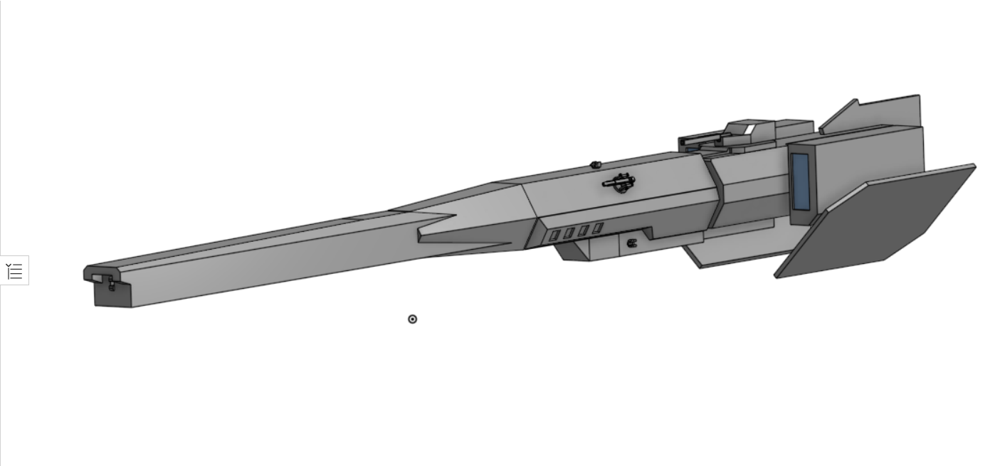
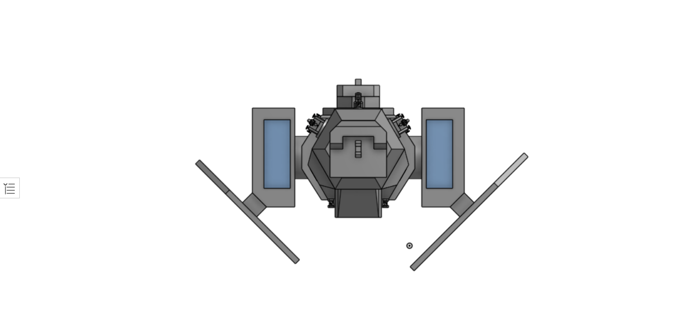

One of the most well rounded ships in service with the UCSC, this vessel packs 8 rapid cycling vertical launch silos, one medium particle railgun turret, two rampart gauss heavy point defense systems, two helium cooled solid state laser point defense turrets, and a single spinally mounted high yield particle railgun. Brining all this respectable fire power in a well armored, decently mobile package, with excellent heat shedding capabilities.
 